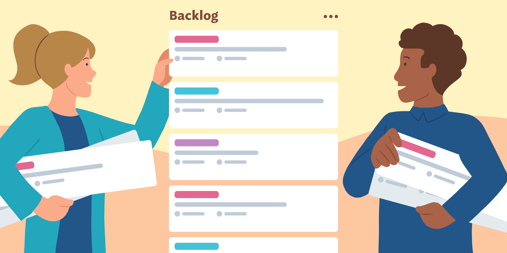

15. Refinamiento del Backlog Priorizado
Índice de Contenidos
- ENTRADAS
- Equipo Principal de Scrum
- Backlog Priorizado
- HERRAMIENTAS
- SALIDAS
ENTRADAS
El proceso de refinamiento del backlog para ZAZDENT incluye:
- Priorización estratégica: Alineación con objetivos de negocio
- Descomposición técnica: Dividir épicas en historias implementables
- Validación continua: Revisión semanal con stakeholders

Sesión de refinamiento con el equipo
Equipo Principal de Scrum
Scrum Master
Sánchez Andrés
- Facilita eventos Scrum
- Elimina impedimentos
- Mantiene métricas del equipo
Product Owner
Bonifacio Dharma
- Define la visión del producto
- Prioriza el backlog
- Valida criterios de aceptación
Equipo de Desarrollo
Frontend
Cañazaca Vasquez, Emily Lorena
React
Tailwind
Backend
Gutiérrez Gutierrez, Danahe Arleni
Node.js
MongoDB
UI/UX
Figueroa Gonzalez, Giner Bush
Figma
User Testing
Full Stack
Escobar Mejia, Alejandro Maycoll
API Integration
DevOps
Backlog Priorizado Actual
Must Have
Should Have
Could Have
Épica 1: Experiencia Inicial del Paciente
| ID | Historia de Usuario | Prioridad | Criterios de Aceptación |
|---|---|---|---|
| US-101 | Como paciente nuevo, quiero una página de bienvenida clara para entender los servicios dentales | Must Have |
|
| US-102 | Como paciente, quiero navegar fácilmente entre las secciones del sitio | Must Have |
|
Épica 2: Gestión de Citas Dentales
| ID | Historia de Usuario | Prioridad | Criterios de Aceptación |
|---|---|---|---|
| US-201 | Como paciente, quiero agendar citas online para elegir especialista y horario | Must Have |
|
| US-202 | Como recepcionista, quiero gestionar múltiples agendas dentales | Should Have |
|
HERRAMIENTAS

Jira Software
Gestión del backlog y seguimiento de sprints
Última actualización: Hoy 09:30

Figma
Prototipado de interfaces dentales
Versión actual: 2.4

Slack
Comunicación diaria del equipo
Canal: #zazdent-dev
Reunión de Refinamiento
1
Revisión de historias con el PO
2
Definición de criterios de aceptación
3
Estimación con Planning Poker

Equipo ZAZDENT durante la sesión de refinamiento
SALIDAS
Plan de Sprints
| Sprint | Fechas | Objetivo | Historias | Puntos |
|---|---|---|---|---|
| Sprint 1 | 20/05 - 03/06 | Experiencia inicial del paciente | US-101, US-102 | 21 |
| Sprint 2 | 04/06 - 17/06 | Sistema básico de citas | US-201 | 13 |
| Sprint 3 | 18/06 - 01/07 | Panel de gestión | US-202 | 8 |
Backlog Actualizado
| ID | Historia | Prioridad | Sprint | Estado |
|---|---|---|---|---|
| US-101 | Página de bienvenida | Must Have | Sprint 1 | Por hacer |
| US-102 | Navegación principal | Must Have | Sprint 1 | Por hacer |
| US-201 | Agendamiento online | Must Have | Sprint 2 | Backlog |